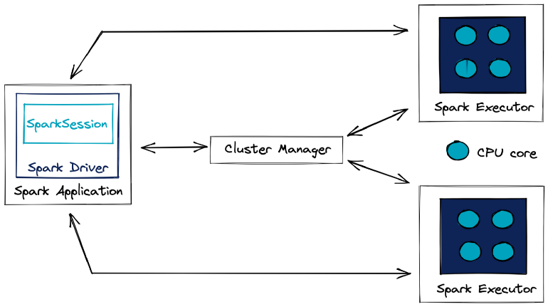
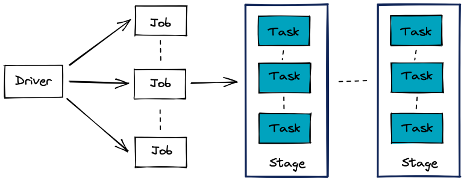
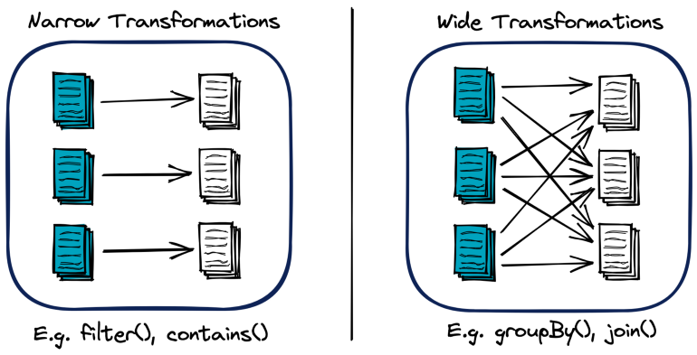
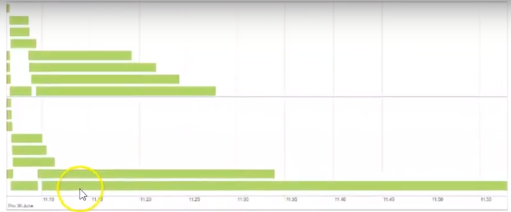
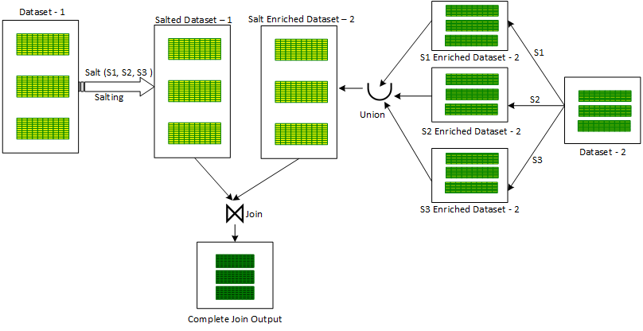
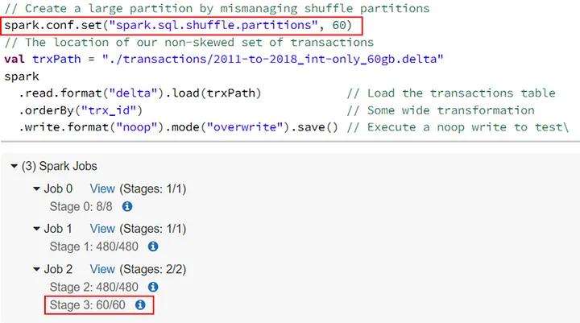
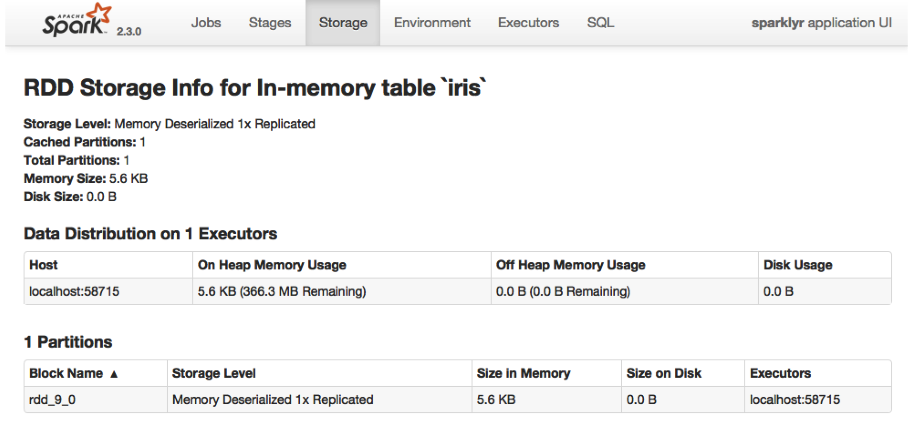
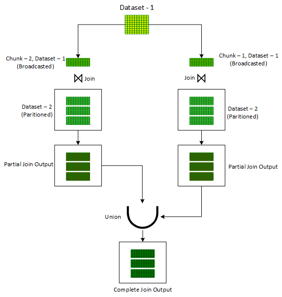
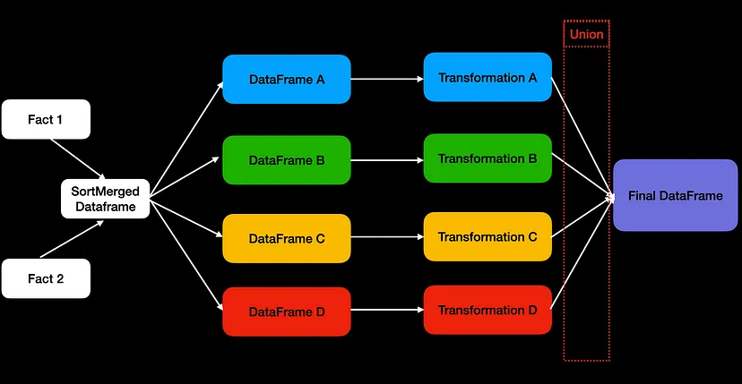
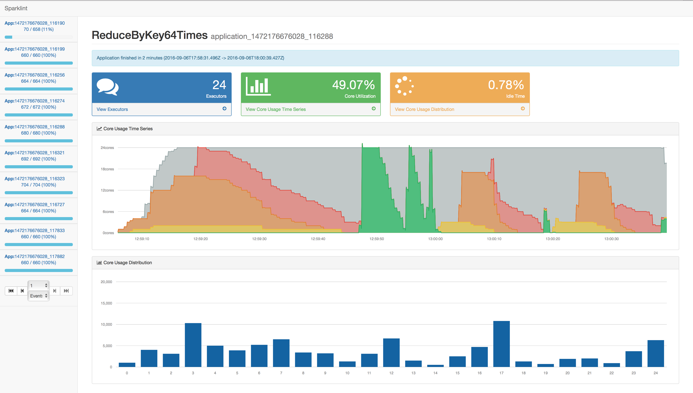

Spark
Misc
Packages
- {sparklyr}
- {sparklyr.nested} - Extension for nested data
- {sparkxgb} - XGBoost in Spark
- {sparklyr.flint} - Time Series Computation
- {multiplyr}
- Alternative option for data with > 10M rows and you only have access to one machine
- Spreads data over local cores
Resources
- 2022 sparklyr cheatsheet
- Mastering Apache Spark with R
Potential issues with transferring R code to Spark
Can’t subset reference dataframe columns
# doesn't work results <- your_function(products_ref$order_id) # Have to collect the column variable and bring the data into the R environ order_id <- product_ref %>% select(order_id) %>% collect() results <- your_function(order_id)
Also becomes an issue within nested functions. Might need to add collect( ) to the end of the inner function code.
Cluster Manager - Responsible to allocate the resources across the Spark Application. This architecture has several advantages. Each application run is isolated from other application run, because each gets its own executor process. Driver schedules its own tasks and executes it in different application run on different JVM. Downside is, that data can not be shared across different Spark applications, without being written (RDD) to a storage system, that is outside of this particular application
Drill - A lightweight version of Spark (no ML stuff, just query). It was orphaned after Dec 19 after some company bought some other company. Can be used through {sergeant} PKG.
Hive - Apache Hive is a data warehouse open-source project which allows querying of large amounts of data. Like SQL it uses an easy-to-understand language called Hive QL
Hive partitions - Used to split the larger table into several smaller parts based on one or multiple columns (partition key, for example, date, state e.t.c). The hive partition is similar to table partitioning available in SQL server or any other RDBMS database tables.
- Embeds field names and values in path segments, such as “/year=2019/month=2/
or part_ .parquet”. HDFS - Hadoop Distributed File System is a data storage system used by Hadoop. It provides flexibility to manage structured or unstructured data. Storing large amounts of financial transactional data in an HDFS to query using Hive QL.
Kafka - More complex to work with than NiFi as it doesn’t have a user interface (UI), mainly used for real-time streaming data. It is a messaging system first created by LinkedIn engineers. Streaming real-time weather events using Kafka
- Embeds field names and values in path segments, such as “/year=2019/month=2/
Spark integration services for the Cloud: AWS EMR, Azure HDInsight, GCP Dataproc.
If Spark is used with Databricks, another particularly interesting format is the delta format which offers automatic optimisation tools.
Process Overview
- Distributed computation is performed by
Configuring - Requests the cluster manager for resources: total machines, memory, and so on.
Partitioning - Splits the data available for computation across each compute instance.
Executing - Means running an arbitrary transformation over each partition.
Shuffling - Redistributes data to the correct machine.
Caching - Preserves data in memory across different computation cycles.
Serializing - Transforms data to be sent over the network to other workers or back to the driver node.
- Spark Driver (aka master node) - Orchestrates the execution of the processing and its distribution among the Spark Executors.
- Not necessarily hosted by the computing cluster, it can be an external client.
- A Spark Executor is a process that runs on a Worker Node and is responsible for executing the tasks of a specific Spark application.
- Executors are allocated a certain amount of memory and CPU cores on the Worker Node. They can run multiple tasks concurrently, using threads to parallelize execution.
- Executors typically persist for the duration of the Spark application, reusing cached data and avoiding overheads of starting new processes for each job.
- Cluster Manager - Manages the available resources of the cluster in real time.
- With a better overview than the Spark application, it allocates the requested resources to the Spark driver if they are available
- e.g. Standalone cluster manager (Spark’s own manager that is deployed on private cluster), Apache Mesos, Hadoop YARN, or Kubernetes
- Worker Node - The physical compute or virtual machine that is responsible for executing tasks and storing data.
- Managed by the Cluster Manager, such as Apache Mesos or YARN, which allocates resources to them.
- Provides CPU, memory, and storage for Spark Executors to run and can host multiple executors from different Spark applications, depending on its available resources.
- Spark Driver (aka master node) - Orchestrates the execution of the processing and its distribution among the Spark Executors.
Example (process)
data <- copy_to(sc, data.frame(id = c(4, 9, 1, 8, 2, 3, 5, 7, 6)), repartition = 3) data %>% arrange(id) %>% collect()- The numbers 1 through 9 are partitioned across three storage instances.
- Each worker node loads this implicit partition; for instance, 4, 9, and 1 are loaded in the first worker node.
- A task is distributed to each worker to apply a transformation to each data partition in each worker node.
- The task executes a sorting operation within a partition.
- Tasks are denoted as f(x) in the Spark webui DAG
- The result is then shuffled to the correct machine to finish the sorting operation across the entire dataset, which completes a stage.
- The sorted results can be optionally cached in memory to avoid rerunning this computation multiple times.
- Finally, a small subset of the results is serialized, through the network connecting the cluster machines, back to the driver node to print a preview of this sorting example.
- Spark Job
- Stages are a set of operations that Spark can execute without shuffling data between machines
- Often delimited by a data transfer in the network between the executing nodes
- e.g. A join operation between two tables.
- Task: A unit of execution in Spark that is assigned to a partition of data.
- Stages are a set of operations that Spark can execute without shuffling data between machines
- Spark Transformation types:
- Shuffle: A redistribution of the data partitions in the network between the executing nodes
- Isn’t usually 1:1 copying as hash keys are typically used to determine how data is grouped by and where to copy. This process usually means data is copied through numerous executors and machines.
- Computationally expensive
- Speed Factors: Data size and latency within cluster
- Wide transformations require shuffling
- Shuffle: A redistribution of the data partitions in the network between the executing nodes
- Lazy Evaluation - Triggers processing only when a Spark action is run and not a Spark transformation
- Allows Spark to prepare a logical and physical execution plan to perform the action efficiently.
Set-Up
- Java
- Install Java or see which version you have installed
- See which versions of Spark are compatible with your version of Java
- Versions that available to install -
spark_available_versions() - Versions that have been installed -
spark_installed_versions() - Install
spark_install has a version argument if you want a specific version
spark_install(version = "3.1")
- Version 3.1 is compatible with Java 11
- Uninstall a version -
spark_uninstall("2.2.0") - Connection
Connect
sc <- spark_connect( master = "local", version = "3.1.1", config = conf)- sc is the connection object
- local means that the cluster is set-up on your local machine
- conf is the list of configuration parameter:value pairs (see below, Optimization >> Configuration)
- Disconnect from cluster -
spark_disconnect_all()
Errors
java.lang.OutOfMemoryError: Java heap space- out-of-memory (OOM) error
- Solutions:
- add more executor memory
- rebalance executor memory through parameters
Service 'sparkDriver' failed after 16 retries- Worker node networking error
- See article for details on implementing these solutions
- Solutions
- Exporting the corresponding SPARK_LOCAL_IP environment variable that is loaded when the JVM is initialized on worker nodes
- Setting the corresponding spark.driver.bindAddress configuration in the SparkSession (note that this approach will override SPARK_LOCAL_IP environment variable)
- Updating the hostname on your local machine
- Check whether you have enabled a Virtual Private Network (VPN) — or any other tool that may be affecting the networking on your local machine — as this may sometimes affect binding addresses
Data Skew
- The OOM error can occur on joins of very large tables or very large table + medium table with skewed data because of unevenly distributed keys
- When a key (also see shuffle in Process Overview >> Spark Transformation types above) has considerably more volume than the others, this “HOT KEY” causes a data skew
- When they say “skewed”, they mean something closer to imbalanced. Partitions and join/group_by variables are usually discrete and this seems like a imbalanced categorical variable issue
- Examples:
- A sales analysis that requires a breakdown by city. The cities with more populations like New York, Chicago, San Fransico have a higher chance to get data skew problems.
- A table is partitioned by month and it has many more records in a few months than all the rest
- Too many null values in a join or group-by key
- Other symptoms
Frozen stages and tasks
Low utilization of CPU
e.g. most tasks finish within a reasonable amount of time, only to have one task take forever
- In the webui, the bottom bar is a task that takes substantially more time to complete than the other tasks
- Solution: Adaptive Query Execution (AQE)
- Implemented in Spark 3.0 and default in 3.2.
- May not provide the most optimized settings for edge cases
- See Deep Dive into Handling Apache Spark Data Skew
- Details on diagnosing, and manually tuning settings (includes salting code and links)
- See Deep Dive into Handling Apache Spark Data Skew
- May not provide the most optimized settings for edge cases
- Video
- See Five Tips to Fasten Skewed Joins in Apache Spark for explainer on the process
- Set spark.sql.adaptive.enabled = TRUE in the config
- Configuration parameters
- spark.sql.adaptive.skewJoin.enabled : This boolean parameter controls whether skewed join optimization is turned on or off. Default value is true.
- spark.sql.adaptive.skewJoin.skewedPartitionFactor: This integer parameter controls the interpretation of a skewed partition. Default value is 5.
- spark.sql.adaptive.skewJoin.skewedPartitionThresholdInBytes: This parameter in MBs also controls the interpretation of a skewed partition. Default value is 256 MB.
- A partition is considered skewed when both (partition size > skewedPartitionFactor * median partition size) and (partition size > skewedPartitionThresholdInBytes) are true.
- Issues
- Cannot handle ‘Full Outer Join’
- Cannot handle skewedness on both input datasets
- Can handle skew only in the left dataset in the Left Joins category (Outer, Semi and Anti)
- Can handle skew in the right dataset in the Right Joins category
- Implemented in Spark 3.0 and default in 3.2.
- Solution: Use broadcast joins (See Optimization >> Shuffling >> Broadcast Joins)
- For inner joins, See Optimization >> Shuffling >> Iterative Broadcast Joins
- Solution: “Salt” the join key(s)
- See video (haven’t found any good step-by-step resources)
- For the largest table, you concantenate the join variable with “_” + random number or letter
- May be better to create a new column with the salted join key so it can be deleted later
- I think the range of the random numbers might need to be the number of threads you’re using but it may not matter as long as its larger than the cardinality of your join variable
- For the other table(s) involved in the join, each join variable value should have the same range of numbers as it’s counterpart in the largest table. So rows will essentially be replicated.
- This increases the size of the table.
- It might increase it to the size of the largest table as all other column values get replicated.
- This increases the size of the table.
- Join tables then perform calculations (e.g. group_by(join_id) %>% count)
- Delete the join column or remove the concantenated part
- Solution: Salted Sort Merge Join
Notes from
- Five Tips to Fasten Skewed Joins in Apache Spark
- Ajay Gupta (says contact him for code snippets)
- Five Tips to Fasten Skewed Joins in Apache Spark
Also see Deep Dive into Handling Apache Spark Data Skew
- Details on diagnosing, and manually tuning settings (includes salting code and links)
Useful when joining a large skewed dataset with a smaller non-skewed dataset but there are constraints on the executor’s memory
Can be used to perform Left Join of smaller non-skewed dataset with the larger skewed dataset which is not possible with Broadcast Hash Join even when the smaller dataset can be broadcasted to executors
Issues
- Cannot handle Full Outer Join
- Cannot handle skewness on both input datasets
- Can handle skew only in the left dataset in the Left Joins category (Outer, Semi and Anti)
- Can handle skew only in the right dataset in the Right Joins category
Have to turn off the ‘Broadcast Hash Join’ approach. This can be done by setting ‘spark.sql.autoBroadcastJoinThreshold’ to -1
Similar to ‘Iterative Broadcast Hash’ Join (Optimization >> Shuffling >> Iterative Broadcast Joins)
Process Option 1
- An additional column ‘salt key’ is introduced in one of the skewed input datasets.
- A number is randomly assigned from a selected range of salt key values for the ‘salt key’ column to every record
- A for-loop is initiated on salt key values in the selected range. For every salt key value:
- FIlter the salted input dataset for the iterated salt key value
- Join the salted filtered input dataset with the other unsalted input dataset to produce a partial joined output.
- To produce the final joined output, all the partial joined outputs are combined together using the Union operator.
Process Option 2
- An additional column ‘salt key’ is introduced in one of the skewed input datasets.
- A number is randomly assigned from a selected range of salt key values for the ‘salt key’ column to every record
- A for-loop is initiated on salt key values in the selected range. For every salt key value:
- The second non skewed input dataset is enriched with the current iterated salt key value by repeating the the same value in the new ‘salt’ column to produce a partial salt enriched dataset.
- All these partial enriched datasets are combined using the Union operator to produce a combined salt enriched dataset version of the second non-skewed dataset.
- The first skewed salted dataset is Joined with the second salt enriched dataset to produce the final joined output
Process Option 3
- Solution: Broadcast MapPartitions Join
- Only method to handle a skewed ‘Full Outer Join’ between a large skewed dataset and a smaller non-skewed dataset.
- supports all type of Joins and can handle skew in either or both of the dataset
- Issues
- Requires considerable memory on executors.
- Larger executor memory is required to broadcast the smaller input dataset and to support intermediate in-memory collection for manual Join provision.
- Requires considerable memory on executors.
- The smaller of the two input dataset is broadcasted to executors while the Join logic is manually provisioned in the ‘MapPartitions’ transformation which is invoked on the larger non-broadcasted dataset.
- Only method to handle a skewed ‘Full Outer Join’ between a large skewed dataset and a smaller non-skewed dataset.
Disk Spill
- Notes from Spark Performance Tuning: Spill
- Article also has a nice breakdown of the memory types, parameters, etc for executors and where spill occurs.
- Spark is designed to leverage in-memory processing. If you don’t have enough memory, spark will try to write the extra data to disk to prevent your process from crashing. (i.e. data is “spilling” over because memory is “full”)
- Monitoring
- If there is disk spill, the spill metrics will be included in the various monitoring tables
- Spill (Memory): Captures the size of data in memory before it’s spilled to disk and serialized.
- More directly gauges the volume of data being processed in memory before spilling.
- Spill (Disk): The size of the serialized data on disk after it was spilled from memory during shuffle operations.
- More directly reflects the actual disk usage during spilling.
- Before spilling, Spark serializes the data (converts it into a compact format for efficient disk storage).
- Spill (Memory): Captures the size of data in memory before it’s spilled to disk and serialized.
- Tables (e.g. large partitions leading to disk spillage)

- If there is disk spill, the spill metrics will be included in the various monitoring tables
- Actions that can generate spill
- Data Skew
- Reducing spark.sql.shuffle.partitionsleads to bigger file sizes per partition.
Example
// Create a large partition by mismanaging shuffle partitions spark.conf.set(“spark.sql.shuffle.partitions”, 60) // The location of our non-skewed set of transactions val trxPath = “./transactions/2011-to-2018_int-only_60gb.delta” spark .read.format(“delta”).load(trxPath) // Load the transactions table .orderBy(“trx_id”) // Some wide transformation .write.format(“noop”).mode(“overwrite”).save() // Execute a noop
joinorcrossJoinbetween 2 data tables.- Setting spark.sql.files.maxPartitionBytes to high (default is 128 MBs).
explodeon multiple columns in data tables.Example
// An array that will grow each partions by a factor of 8 val data = Seq(0,1,3,4,5,6,7,8).toArray val count = spark .read.format(“delta”).load(trxPath) // Load the transactions table .withColumn(“stuff”, lit(data)) // Add an array of N items .select($”*”, explode($”stuff”)) // Explode dataset in size by N-1 .distinct() // Some wide transformation .write.format(“noop”).mode(“overwrite”).save() // Execute a noop
- Solutions:
- Fix Skew
- Process less data per task, which can be achieved reducing file size per partition via spark.shuffle.partitions or repartition.
- Increase the RAM to core ratio in your compute, i.e. add more memory per worker (increase worker size).
- Adjust spark.sql.files.maxPartitionBytes - Influences size of partitions when reading in files. Parquet files are already efficient in this respect but CSVs and others may benefite.
- Increase spark.shuffle.spill.fraction: Specifies the fraction of executor memory that can be used for shuffle data before spilling starts. Default: 0.20 (20%)
- Example: If executor memory is 10GB and spark.shuffle.spill.fraction is 0.2, then spilling to disk starts when shuffle data reaches 2GB (20% of 10GB).
- Increasing:
- Delays spilling, potentially improving performance by keeping more data in memory.
- Risks out-of-memory errors if memory is limited.
Optimization
- Use event timeline in the UI to find bottlenecks
Configuration
Values of parameters can be viewed in the UI under the Environment tab
Configuration object used as input to the config arg in
spark_connectMisc
- Recommended to request significantly more memory for the driver than the memory available over each worker node.
- In most cases, you will want to request one core per worker.
Parameters
- cores.local: (local mode) number of cores you want used by the cluster
- shell.driver-memory: amount RAM you want used by the driver node (or cluster if local)
- spark.memory.fraction: percentage of that RAM you want dedicated to jobs that will be run in the cluster and storing RDDs
- Default: 0.60
- Probably want to hold some back for monitoring, administering the cluster, etc.
- spark.memory.storageFraction: percentage of RAM you want specifically for storing RDDs
- If you’re mostly doing things like quickly filtering and retrieving subsets, then you can set this equal to your spark.memory.fraction
- Spark will borrow execution memory from storage and vice versa if needed and if possible; therefore, in practice, there should be little need to tune the memory settings
- spark.executor.memory: percentage of RAM you want specifically for executing actions
Example (method 1)
conf <- list() conf$`sparklyr.cores.local` <- 6 conf$`sparklyr.shell.driver-memory` <- "6G" conf$`spark.memory.fraction` <- 0.9Example (method 2)
# Initialize configuration with defaults config <- spark_config() # Memory config["sparklyr.shell.driver-memory"] <- "2g" # Cores config["sparklyr.connect.cores.local"] <- 2Example (method 3)
default: sparklyr.shell.driver-memory: 2G- Allows you to have cleaner code
- Create a config.yml file in the working dir or a parent dir. Then there’s no need to specify the config parameter when creating a connection
- You can also specify an alternate configuration filename or location by setting the file parameter in
spark_config() - Can also change the default configuration by changing the value of the R_CONFIG_ACTIVE environment variable. See the GitHub rstudio/config repo for additional information
- You can also specify an alternate configuration filename or location by setting the file parameter in
Partitioning
Ideally, Spark organises one thread per task and per CPU core
Increasing partitions can help performance but don’t create too many partitions
- There is a deterioration of I/O performance due to the operations performed by the file system (e.g. opening, closing, listing files), which is often amplified with a distributed file system like HDFS.
- Scheduling problems can also be observed if the number of partitions is too large.
Types
- Implicit: type of partitioning already present in the storage system
- e.g. directory tree of Arrow files that have been partitioned; table schema in a relational db (?)
- (default) it’s more effective to run computations where the data is already located
- Explicit: Manaully setting the number of partitions (i.e. repartitioning)
- Useful when when you have many more or far fewer compute instances than data partitions. In both cases, it can help to repartition data to match your cluster resources
- Various data functions, like
spark_read_csv()orcopy_to(), already support a repartition parameter to request that Spark repartition data appropriately- Also,
spark_df %>% sdf_repartition(4)(e.g. repartitions a Spark DataFrame to have 4 partitions)- Should be shown as the spark.sql.shuffle.partitions parameter in the webui or config
sdf_coalesce(x, partitions)can reduce the number of partitions without shuffling
- Also,
- Implicit: type of partitioning already present in the storage system
Check number of partitions for a data object
sdf_len(sc, 10) %>% sdf_num_partitions() >> 2sdf_lencreates a spark df with a sequence length (e.g. 10 in this toy example)- I think this a numeric vector in R but they just call everything a df in Spark
- I think the default is set the partitions to the number of cores/instances that are being used in the cluster
spark.sql.files.maxPartitionBytes - Influences size of partitions when reading in files. Parquet files are already efficient in this respect but CSVs and others may benefite.
- Data Size and Distribution:
- Large Files: For massive files, smaller partitions can improve parallelism and processing speed by distributing work across more cores.
- Small Files: Too many small partitions can introduce overhead, so larger partitions might be better.
- Skewed Data: If data distribution is uneven (some partitions much larger than others), adjusting the parameter can help balance workload and prevent bottlenecks.
- File Format:
- Columnar Formats (Parquet, ORC): Efficiently handle larger partitions due to compression and selective column reads.
- Text-based Formats (CSV, JSON): Might benefit from smaller partitions for faster parsing and processing.
- Memory Constraints:
- Limited Memory: Smaller partitions can reduce memory pressure, but excessive partitioning can increase overhead.
- Computation Type:
- Shuffle-intensive Operations (joins, aggregations): Benefit from larger partitions to minimize data movement and shuffling overhead.
- Transformations on individual partitions: Less affected by partition size.
- Hardware Configuration:
- Number of Cores: More cores can handle larger partitions effectively.
- Disk I/O Speed: Slower disks might favor smaller partitions to reduce disk seeks.
- General Recommendations:
- Default (128MB): Often a good starting point.
- Larger Files: Consider increasing the value (e.g., 1GB).
- Small Files: Decrease the value (e.g., 64MB).
- Skewed Data: Experiment with different values to find the best balance.
- Best Practices:
- Monitor performance metrics to assess partitioning effectiveness.
- Adjust the parameter based on specific data characteristics and workload requirements.
- Consider other configuration options like spark.sql.files.openCostInBytes and spark.sql.files.minPartitionNum for fine-tuning.
- Data Size and Distribution:
Caching
- Functions like
spark_read_parquet()orcopy_to()load/cache data objects into memory (aka resilient distributed dataset (RDD))- Save data from being lost when a worker fails
tbl_uncache(sc, "iris")can be used to free up memory by removing a RDD from cache
- Inspect RDDs through the UI (Storage Tab >>
)
 - Checkpoints
sdf_checkpointcaches a spark dataframe or an object thats coerceable to a spark dataframe- Useful during analysis after computationally intensive calculations so that you don’t have to repeat them
- There is a cost to writing these results to disk, so you might need to test whether the calculation is intensive enough for checkpointing to be more efficient.
spark_set_checkpoint_dir() spark_get_checkpoint_dir()are for setting and getting the location of the cache directory- Cache is deleted after the end of the spark session
- Useful during analysis after computationally intensive calculations so that you don’t have to repeat them
Shuffling
- Spark stores the intermediate results of a shuffle operation on the local disks of the executor machines, so the quality of the disks, especially the I/O quality, is really important.
- The use of SSD disks will significantly improve performance for this type of transformation
- Sort Merge (Default) requires full shuffling of both data sets via network which is heavy task for Spark
- Other Joins: Docs
Broadcast Joins
** Think this only needs to be explicitly specified for Spark 2.x. Spark 3.0 has Adaptive Query Execution (AQE) which uses the optimal type of join automatically. **
- Video
- May need Databricks (runtime >7.0) to get AQE and set spark.sql.adaptive.enabled = TRUE in the config
Useful when one df is orders of magnitude smaller than the one you’re joining it too
- It pushes one of the smaller DataFrames to each of the worker nodes to reduce shuffling the bigger DataFrame
- By duplicating the smallest table, the join no longer requires any significant data exchange in the cluster apart from the broadcast of this table beforehand
- If you are joining two data sets and both are very large, then broadcasting any table would kill your spark cluster and fails your job.
Can be set according to difference in size in bytes using spark.sql.autoBroadcastHashJoin (not sure if this is available in {sparklyr}
- Default = 10 MB difference in sizes
- Setting to -1 means spark always uses a broadcast join (maybe useful with sufficient memory available)
Adjust (increase?) spark.sql.autoBroadcastJoinThreshold to get smaller tables broadcasted
- Should be done to ensure sufficient driver and executor memory
- Setting to -1 disables it
Issues
- Not Applicable for Full Outer Join.
- For Inner Join, executor memory should accommodate at least smaller of the two input dataset. (See Iterative Broadcast Joins below as a potential solution)
- For Left , Left Anti and Left Semi Joins, executor memory should accommodate the right input dataset as the right one needs to be broadcasted.
- For Right , Right Anti and Right Semi Joins, executor memory should accommodate the left input dataset as the left one needs to be broadcasted.
- There is also a considerable demand of execution memory on executors based on the size of broadcasted dataset.
Example:
sdf_len(sc, 10000) %>% sdf_broadcast() %>% left_join(sdf_len(sc, 100))
Iterative Broadcast Joins
- ** Limited to Inner Joins only**
- An adaption of ‘Broadcast Hash’ join in order to handle larger skewed datasets. It is useful in situations where either of the input dataset cannot be broadcasted to executors. This may happen due to the constraints on the executor memory limits.
- Breaks downs one of the input data set (preferably the smaller one) into one or more smaller chunks thereby ensuring that each of the resulting chunk can be easily broadcasted.
- Outputs from these multiple joins is finally combined together using the ‘Union’ operator to produce the final output.
- Process
- Assign a random number out of the desired number of chunks to each record of the Dataset in a newly added column, ‘chunkId’.
- A for-loop is initiated to iterate on chunk numbers. For each iteration:
- Records are filtered on the ‘chunkId’ column corresponding to current iteration chunk number.
- The filtered dataset, in each iteration, is then joined with the unbroken other input dataset using the standard ‘Broadcast Hash’ Join to get the partial joined output.
- The partial joined output is then combined with the previous partial joined output.
- After the loop is exited, one would get the overall output of the join operation of the two original datasets
Serialization
Kryo Serializer that can provide performance improvements over the default Java Serializer
config <- spark_config() config$spark.serializer <- "org.apache.spark.serializer.KryoSerializer"
Avoid Loops
In the planning phase, spark creates a directed acyclical graph (DAG) which indicates how your specified transformations will be carried out. The planning phase is relatively expensive and can sometimes take several seconds, so you want to invoke it as infrequently as possible.
Example: pyspark
import functools from pyspark.sql import DataFrame paths = get_file_paths() # BAD: For loop for path in paths: df = spark.read.load(path) df = fancy_transformations(df) df.write.mode("append").saveAsTable("xyz") # GOOD: functools.reduce lazily_evaluated_reads = [spark.read.load(path) for path in paths] lazily_evaluted_transforms = [fancy_transformations(df) for df in lazily_evaluated_reads] unioned_df = functools.reduce(DataFrame.union, lazily_evaluted_transforms) unioned_df.write.mode("append").saveAsTable("xyz")- I assume pyspark can do the same trick with wildcards that sparklyr uses, so not sure how necessary this is.
Example: sparklyr
library(sparklyr) # wildcard file_paths <- "/path/to/directory/*.csv" # directory file_paths <- "/path/to/directory" # explicitly file_paths <- c("/path/to/file1.csv", "/path/to/file2.csv") # arrow data <- arrow::open_dataset(sources = "/path/to/directory") data <- spark_read_csv(sc = sc, name = "my_data", path = file_paths)
Union Operator
e.g.
df = df1.union(df2).union(df3)(article)If users don’t use union on entirely different data sources, union operators will face a potential performance bottleneck — Catalyst isn’t “smart” to identify the shared data frames to reuse.
Ensure rows follow the same structure:
- The number of columns must be identical.
- Column data types should match
- The column names should follow the same sequence for each data frame. Nevertheless, that’s not mandatory.
- The first data frame will be chosen as the default for the column name. So mixing order can potentially cause an undesired result.
- Spark
unionByNameis intended to resolve this issue.
unionAllis an alias tounionthat doesn’t remove duplication. We’d need to add distinct after performing union to perform SQL-like union operations without duplication.Typical Use Case
- “Fact 1” and “Fact 2” are 2 large tables that have been joined and split (e.g. filtering) into subsets. Each subset uses different transformations, and eventually, we combine those 4 data frames into the final one.
- Since Catalyst doesn’t recognize these are the same dfs, it performs the two big table join four times!
Solutions
- Double the number of executors to run more concurrent tasks
- Hint to Catalyst and let it reuse the joined data frame from memory through caching
Example: Caching
## Perform inner join on df1 and df2 df = df1.join(df2, how="inner", on="value") ## add cache here df.cache() ## Split the joined result into two data frames: one only contains the odd numbers, another one for the even numbers df_odd = df.filter(df.value % 2 == 1) df_even = df.filter(df.value % 2 == 0) ## Add a transformation with a field called magic_value which is generated by two dummy transformations. df_odd = df_odd.withColumn("magic_value", df.value+1) df_even = df_even.withColumn("magic_value", df.value/2) ## Union the odd and even number data frames df_odd.union(df_even).count()- Reduces the plan from 50 to 32 stages
Data Ingestion
Send data from R to the Spark Cluster
iris_ref <- dplyr::copy_to(sc, iris_df, "iris_tbl")- iris_ref
- List object in R environment that is a reference to iris_tbl in spark
- Work with this object in R like normal
- iris_df
- Data object in the R environment that you want to load into spark
- iris_tbl
- Name that you want the spark table to have in the spark cluster
- iris_ref
Manipulate ref objs and create new object in spark and R
full_products <- dplyr::copy_to(sc, products_ref) %>% inner_join(departments_ref) %>% inner_join(aisles_ref, name = "product_full", overwrite = TRUE) # or use the spark object name to create an ref object tbl(sc, "product_full") %>% select(var_name)copy_toalso can be used to create new objects in spark from reference objects in R- products_ref, departments_ref, and aisles_ref are reference objects for tables inside spark
- products_full is the name we want for the new table inside spark
- full_products will be the reference object for products_full
Read csv file into spark cluster
products_ref <- spark_read_csv(sc, "products_tbl", "folder/folder/products.csv")- products_ref is the reference object
- sc is the connection object
- products_tbl is the name we want for the table inside spark
- Last part is the path to the file
Read multiple files
library(sparklyr) # wildcard file_paths <- "/path/to/directory/*.csv" # directory file_paths <- "/path/to/directory" # explicitly file_paths <- c("/path/to/file1.csv", "/path/to/file2.csv") # arrow data <- arrow::open_dataset(sources = "/path/to/directory") data <- spark_read_csv(sc = sc, name = "my_data", path = file_paths)View tables in cluster -
src_tbl(sc)Bring Data from the Cluster into R
pred_iris <- ml_predict(model_iris, test_iris) %>% dplyr::collect()collectbrings the predictions data into the R environment
Functions
nrow \(\rightarrow\)
sdf_nrow(ref_obj)- Using nrow on a reference object with output a NA
quantile \(\rightarrow\)
percentileExample:
cars %>% summarize(mpg_percentile = percentile(mpg, array(0, 0.25, 0.5, 0.75, 1))) %>% mutate(mpg_percentile = explode(mpg_percentile))- cars is a reference object
percentilereturns a list soexplode(unnesting/flattening) coerces it into a vector- I found an example of “explode” in {sparklyr} docs but no function documentation. Function also available in {sparkr} and {sparklyr.nested}
cor \(\rightarrow\)
ml_corr(ref_obj)- Pearson correlation on a reference object
Spark SQL
Get sql query from a dplyr operations
count(ref_obj) %>% show_query()- Can use mutate, group_by, summarize, across, etc.
Use SQL to query spark object
DBI::dbGetQuery( conn = sc, statement = "SELECT COUNT(*) AS 'n' FROM `full_product`" )- Where full_product is the name of the table in the cluster
Modeling
Partition, Register, Create Reference Object
sdf_partitioncreates partition reference object for train, test setssdf_registertakes the partition reference object and “registers” the splits in the cluster- Not sure if partition_iris is in the cluster, but I think when the “registering” occurs is when the splitting takes place inside the cluster and separate objects are created.
tblcreates a separate reference object for train data in Rpartition_iris <- sdf_partition(iris_ref, training = 0.8, testing = 0.2) sdf_register(partition_iris, c("spark_training_iris", "spark_testing_iris")) tidy_iris <- tbl(sc, "spark_iris_training") %>% select(Species, Petal_Length, Petal_Width)
Train Basic Spark ML model
model_iris <- tidy_iris %>% ml_decision_tree(response = "Species", features = c("Petal_Width", "Petal_Length")) test_iris <- tbl(sc, "spark_testing_iris")- test_iris and tidy_iris are reference objects
- I don’t think model_iris is a reference object. It’s a spark class objecti but I believe it’s in your environment and not on the cluster
Predict
pred_iris <- ml_predict(model_iris, test_iris) %>% dplyr::collect()Summary -
summary(model)Models
- OLS -
ml_linear_regression(cars, mpg ~ hp)- Where cars is a reference object
- OLS -
XGBoost
library(sparkxgb) library(sparklyr) sc <- spark_connect(master = "local") iris_tbl <- copy_to(sc, iris) xgb_model <- xgboost_classifier( iris_tbl, Species ~ ., num_class = 3, num_round = 50, max_depth = 4 ) xgb_model %>% ml_predict(iris_tbl) %>% select(Species, predicted_label, starts_with("probability_")) %>% dplyr::glimpse() #> Rows: ?? #> Columns: 5 #> Database: spark_connection #> $ Species <chr> "setosa", "setosa", "setosa", "setosa", "setosa… #> $ predicted_label <chr> "setosa", "setosa", "setosa", "setosa", "setosa… #> $ probability_setosa <dbl> 0.9971547, 0.9948581, 0.9968392, 0.9968392, 0.9… #> $ probability_versicolor <dbl> 0.002097376, 0.003301427, 0.002284616, 0.002284… #> $ probability_virginica <dbl> 0.0007479066, 0.0018403779, 0.0008762418, 0.000…
Streaming
Spark server will continue to run and detect changes/updates
- To files in a folder
- To Apache Kafka stream
Start a stream -
stream_read_csv(sc, "<input folder path>/")- Make sure path to folder (e.g. “stream_input/”) ends with a backslash
Write output of processed stream -
stream_write_csv(<processed_stream_obj>, "<output folder path>/")Stop stream
- Might have to stop connection to spark server with
spark_disconnect_all()
- Might have to stop connection to spark server with
Example:
stream <- stream_read_csv(sc, "stream_input/") stream %>% select(mpg, cyl, disp) %>% stream_write_csv("stream_output/"
Monitoring
Sparklint
- Github
- Provides advance metrics and better visualization about your spark application’s resource utilization
- Vital application life time stats like idle time, average vcore usage, distribution of locality
- View task allocation by executor
- VCore usage graphs by FAIR scheduler group
- VCore usage graphs by task locality
- Current works-in-progress (WIP)
- Find rdds that can benefit from persisting
- Automated report on application bottle neck
- Opportunity to give the running application real-time hints on magic numbers like partitions size, job submission parallelism, whether to persist rdd or not
webui
spark_web(sc)- Where sc is the spark connection object
- Resources
- Docs: https://spark.apache.org/docs/latest/web-ui.html
- R in Spark (sections on DAGs, event timeline, and probably more)
- Default URL: http:driver_host:4040
Spark metrics also available through a REST API
- API Metrics
- SparkListener API docs: https://spark.apache.org/docs/2.4.8/api/java/org/apache/spark/scheduler/SparkListener.html
- Examples: start/end, job start/end, stage start/end, execution time, records read/written, bytes read/written, etc.
- Might require knowing Java to take advantage of the api
- Example of a “listener” was written in Java but it’s an API, so not why you can’t use any language
- API Metrics
Prometheus
- Experimental support
- REST API: /metrics/executors/Prometheus
- Conditional to “spark.ui.prometheus.enabled=true”
- REST API: /metrics/executors/Prometheus
- Experimental support
Graphana
- Visualizes metrics streaming to it
.png)
- Plugins
- Allow you to monitor
- Cloud Storage
- OS metrics (important for kubernetes)
- Improved HDFS monitoring
- Allow you to monitor
- Visualizes metrics streaming to it
.png)
.png)
{kind=link}
{kind=link}
{kind=link}
{kind=link}
{kind=link}
{kind=link}
{kind=link}
{kind=link}
{kind=link}
{kind=link}
{kind=link}
{kind=link}
{kind=link}
{kind=link}
Cloud
Databricks
- Misc
- Free community edition available
- {sparkR} and {sparklyr} are already installed on a databricks instance
- Databricks Connect is now able to run regular Python code inside Spark. {sparklyr} takes advantage of this capability by having Python transport and run the R code. It does this via the {{rpy2}}.
- {{rpy2}} will have to be manually installed on the Spark cluster. (See docs for instructions)
- Using RStudio and databricks
- Via driver node
- R runtime including required packages installed on every node in the cluster while RStudio Server only runs on the driver node where also the web UI is provided
- No network latency occurs by transferring data between R and Databricks as the JVM processes run on the same machine
- Avoids having to set up another infrastructure
- If your Databricks cluster is constantly running and you haven’t lot going on besides the interactive workloads, then this option might even be more convenient
- Separate environment
- Avoids resource contention
- Allows you to connect to any other remote storage or compute resources if required
- For details on this connection see RStudio and Databricks Better Together
- Via driver node
- Connect
sparklyr::spark_connect(method = "databricks")- May require some extra information on the location of the databricks spark location
Example:
databricks_connect_spark_home <- system("databricks-connect get-spark-home", intern = TRUE) sc <- spark_connect( method = "databricks", spark_home = databricks_connect_spark_home, config = conf )
- UDFs
spark_applyspark_apply( tbl_mtcars, nrow, group_by = "am", columns = "am double, x long" ) #> # Source: table<`sparklyr_tmp_table_87ef961e_1009_42f8_abdb_2a04c2a5ad38`> [2 x 2] #> # Database: spark_connection #> am x #> <dbl> <dbl> #> 1 0 19 #> 2 1 13- columns: Specifying a schema makes it run faster. Otherwise, it looks at the first 10 rows and tries to figure out what the column types are.
- arrow_max_records_per_batch: Controls then number of parallel jobs.
- Arrow is installed on all clusters by default. So instead of using group_by to determine how the data will be partitioned, it will controlled by this argument.
- The equivalent Spark setting is spark.sql.execution.arrow.maxRecordsPerBatch
- Currently only works on Databricks “Single Access” mode and not “Shared Access” mode.
- If
mapInPandasandapplyInPandasare ever implemented in Shared Access, then this will meanspark_applywill also.
- If
- Monitoring
- Databricks workspace provides through its UI a fairly easy and intuitive way of visualizing the run history of individual jobs
- Databricks REST API can be used to extract you jobs data
AWS
- AWS Glue allows you to spin up in a couple of seconds a spark cluster up to 100 executors where each executor is 4 CPUs and 16GB RAM.
- AWS EMR is a managed service if you want a more configurable cluster
- EMR
- Cons
- Over-Provisioning or under-provisioning leads to wasted resources or queued jobs
- e.g. Ad-Hoc exploration of the researchers with bursts of high usage.
- Can’t run multiple versions of Spark simultaneously.
- Example: The consequence of this was a burden for migration and testing. Routinely creating new EMR clusters to test out against new dependencies. The added infrastructure burden delayed upgrades and increased the accumulation of technical debt.
- Scattered visibility
- No single place to visualize Spark job metrics, Executor/Driver Logs, and the Application UI
- Debugging executor failures due to out-of-memory was often tricky
- Since Spark is a distributed computational framework - failure stack traces wouldn’t always be informative about the root cause since it may be a red herring.
- Lack of configuration agility
- No ability to change the underlying execution environment to remediate the failure reason(s) automatically
- Over-Provisioning or under-provisioning leads to wasted resources or queued jobs
- Cons
Kubernetes
- Options
- Spark’s integration with Kubernetes (non-AWS I think)
- EMR on EKS
- Good binding for IAM, EMRFS, and S3, and AWS-provided integrations and container images
- EMR on EKS
- Stitchfix configuration
- Misc
- Saw a 45-55% reduction in infrastructure cost for all our Spark-based compute by switching from EMR to EMR on EKS
- They’re running thousands of daily spark jobs, so this may not be a solution for everyone plus it would require some substantial programming expertise to implement some of this stuff
- Cluster Autoscaler - As Spark pods are scheduled, EKS cluster nodes are added or removed based on load
- Set to cull nodes after an unused interval of 5 minutes and a scanning interval of 1 minute
- Container images use official EMR on EKS images as base images and then add other dependencies
- Same cluster can run multiple versions of Spark
- Testing a new version only requires producing a new container image base and running an ad hoc testing job
- Each cluster node uses the image pre-puller pattern to cache the Spark images to improve job startup time
- Same cluster can run multiple versions of Spark
- Monitoring
- EKS pod events + EMR on EKS CloudWatch events
- EKS pod events: provide granular visibility into the setup, execution, and tear down of a job.
- EMR cloudwatch: provide high-level overview of the job state (i.e., queued, started, or finished).
- Stream logs from S3 buckets to Flotilla for monitoring and debugging
- Each of the container logs comes from the driver, executor, and controller pods.
- Metrics
- Cluster instrumented with Victoria Metrics to collect detailed container metrics and visualized via Grafana
- Can diagnose difficult shuffles, disk spills, needed or unneeded caching, mis-sized executors, poor concurrency, CPU throttling, memory usage, network throttling, and many other job execution details
- Cluster instrumented with Victoria Metrics to collect detailed container metrics and visualized via Grafana
- Active and Completed jobs
- Something technical (see article for details)
- EKS pod events + EMR on EKS CloudWatch events
- Adaptive Behaviors
- Executor and Driver Memory
- If a job fails due to Executor or Driver running out of memory (exit code 137), automatically schedule the next run with more memory. (link)
- Other stuff (see article for details)
- Executor and Driver Memory
- Misc
- Stitchfix configuration
Google Cloud Platform (GCP)
Read data from cloud storage to local spark cluster
bucket_name <- "ndir-metis-bucket" path <- glue::glue("gs://{bucket_name}/asteroid/Asteroid_Updated.csv") df <- spark_read_csv(path, sep=',', inferSchema=True, header=True)- I adapted this from a pyspark example but should be similar for R